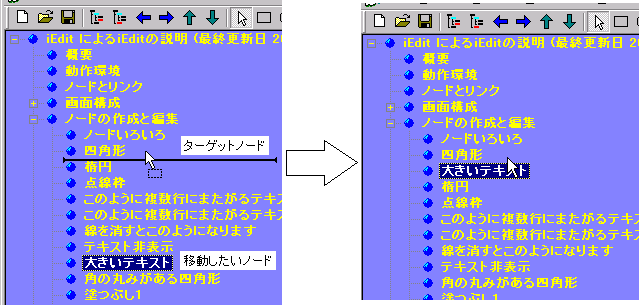

アウトライン編集
アウトラインビューでは、ツリー上にノードの階層的な関係が表示されます。ノードの階層を上げ下げしたり、同じ階層内での順序を変えたりできます。また、ツリーアイテムのラベルを直接編集することもできます。ツリーアイテムのラベルを変更すると、ネットワークビューにおけるノードのラベルも更新されます。
ツールバー、コンテキストメニューによる編集
アウトライン編集機能としてノードの階層を変えるコマンド、階層内での順序を変えるコマンドが提供されています。ノードを右クリックしてメニューから選んだり、ツールバーのボタンをクリックすることで、ノードのレベルや階層内順序の編集ができます。

ドラッグ＆ドロップによる編集
アウトラインビュー内で、ノードをドラッグアンドドロップで移動できます。移動したいノードを移動したい先のノード(ターゲットノード)のラベル上に持ってくるとターゲットノードが選択状態になります。この状態で、ドロップするとターゲットノードの子ノードとして移動します。

移動したいノードをターゲットノードのラベル以外の場所(ラベル左のアイコンや、ラベルの右側など)に持ってくるとターゲットノードに下線(インサートマーク)が表示されます。この状態で、ドロップするとターゲットノードと同じ階層でターゲットノードの次のノートとして移動します。

ドラッグ＆ドロップ 詳細
ドラッグ＆ドロップする時、インサートマーク(横棒)が表示されている状態でドロップすると、マークされたノードと同じ階層に移動し、ドロップ先がインサートマークではなく、選択状態の場合はドロップ先の子階層に移動するのは前述したとおりです。ただ、図のように、マークされたノードと子階層の先頭のノードの間にドロップした場合は、コンテキストメニューで、移動したい先(子階層の先頭か、マークノードと同一階層か)を選ぶようになっています。


「先頭の子にする」を選んだ場合、マークされたノードの子階層の先頭の子ノードになります。

「ドロップ先ノードと階層を合わせる」を選んだ場合、マーカーがついたノードと同じ階層になります。

ツリーのアイコンイメージを変更する
ツリーのアイコンは標準の青以外にも全部で9種類の中から指定可能です。

クリップボード経由で他アプリとツリー構造を受け渡す
アウトラインビューでノードを選択してコンテキストメニューから「ツリーをクリップボードに転送」を実行すると、選択中のノード配下のツリー構造から、テキストデータを作成しクリップボードにコピーします。テキストデータはツリー階層を反映してタブによるインデント処理がされていますので、ExcelやFreeMindなどのマインドマップツールにクリップボード経由でペーストすることでツリー構造を再利用することができます
テキストファイルへのへのエクスポート機能を用いても同様のことが可能ですが、一旦ファイルに出力してピリオド文字をタブに変換するなどの手順が必要になり、多少面倒です。
「クリップボードからツリーを生成」を実行することで他アプリからのツリー構造の読み込みが簡単にできます。階層付きテキストのインポートと同等です。

アウトラインの表示レベルの指定
アウトライン上では、レベルを指定して不要な改装を折りたたんで表示できます。レベル1から指定できます。レベル1は主題以下の第1階層の子ノードのみを表示します。